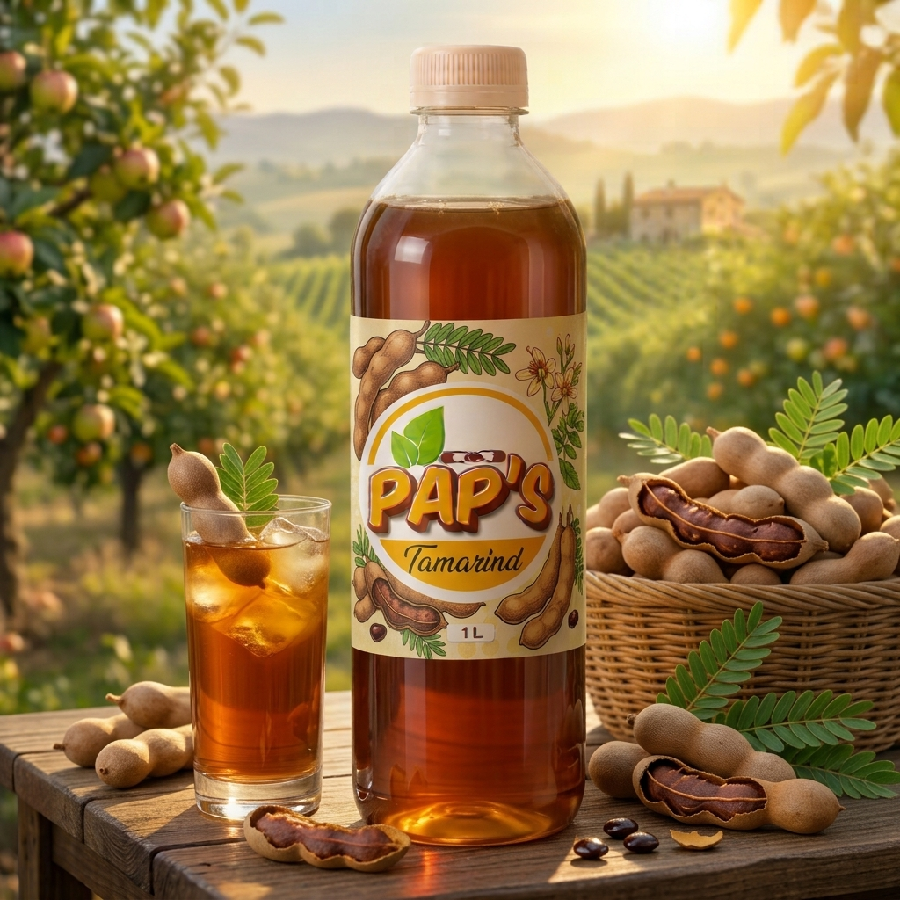

Toutes les saveursPAP’S · Tamarin
Tamarin.
Un caractère singulier à découvrir. Découvrez l’univers de cette saveur PAP’S.

Découvrez aussi
Explorez d’autres saveurs.
Chaque parfum possède sa propre personnalité.
Un caractère singulier à découvrir. Découvrez l’univers de cette saveur PAP’S.

Chaque parfum possède sa propre personnalité.